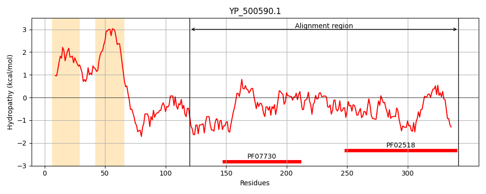
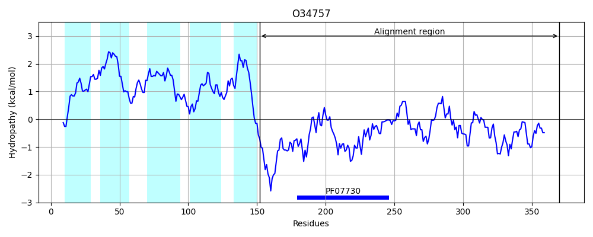
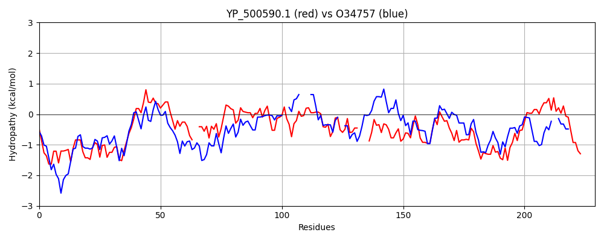

Hit Accession: O34757
Hit TCID: 9.B.238.3.5
Hit Description: gnl|BL_ORD_ID|7150 gnl|TC-DB|O34757|9.B.238.3.5 Sensor histidine kinase DesK OS=Bacillus subtilis (strain 168) OX=224308 GN=desK PE=1 SV=1
Mach Len: 229
e:0.000000
Query TMS Count : 2
Hit TMS Count: 5
TMS-Overlap Score: 2.050000
Predicted Substrates:CHEBI:8526;protein polypeptide chain, CHEBI:2359;ATP
BLAST Alignment:
Score: 150 , Bit scores: 62 bits, E-value: 6.8e-11, Alignment length: 229, Percentage identity: 22
Query: 120 KLRLKTQNLTNENYNINDVKVKKIIEDERQRLARELHDSVSQQLFAASMMLSAIKETKLEPPLD--QQIPILEKMVQDSQLEMRALLLHLRPLGLKDKSLGEGIKDLVIDLQKKVPMKVVHEIQDFKVPKGI----EDHLFRITQEAISNTLRHSNGTKVTVELFNKDDYLLLRIQDNGKGFNVDEKLEQSYGLKNMRERALEIGATFHIVSLPDSGTRIEVKAPLNKE 342
K R + + L + + N+ + + +ERQR+AR+LHD++ Q+L + ++ + P +++ +++ + S E+R ++ ++ + LKD+ + IK ++ + + ++E + K P+ I E+ L +EA++N ++HS V++ +++ + D+G + + +GL MRER + HI + ++GT++ + P N +
Sbjct: 152 KSRKERERLEEKLEDANERIAELVKLEERQRIARDLHDTLGQKLSLIGLKSDLARKLIYKDPEQAARELKSVQQTARTSLNEVRKIVSSMKGIRLKDELIN--IKQIL----EAADIMFIYEEE--KWPENISLLNENILSMCLKEAVTNVVKHSQAKTCRVDIQQLWKEVVITVSDDGTFKGEENSFSKGHGLLGMRERLEFANGSLHIDT--ENGTKLTMAIPNNSK 370 | Protein Hydropathy Plots: |
|---|
|  |  |
Pairwise Alignment-Hydropathy Plot:
|
|---|
|  |